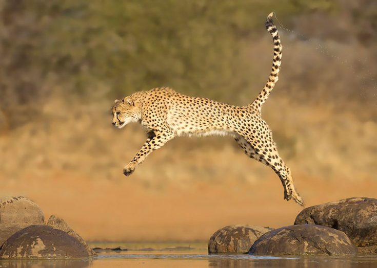

Cheetahs — Гепард (лат. Acinonyx jubatus) — хищное млекопитающее семейства кошачьих, обитает в большинстве стран Африки, а также на Ближнем Востоке. Это единственный современный сохранившийся представитель рода Acinonyx. Быстрейший из всех наземных млекопитающих: за 3 секунды может развивать скорость до 110 км/ч. Согласно другим данным максимальная скорость гепардов достигает 93 км/ч.
Гепард — представляет сильное животное, относящееся к семейству кошачьих. Кроме этого, хищник относится к роду «Acinonyx» и считается одним из тех представителей этого рода, которому удалось сохраниться до наших дней. Гепардов еще называют охотничьими леопардами, при этом они заметно отличаются от многих представителей этого семейства, как по внешнему виду, так и по ряду других признаков.
Практически все виды гепардов являются достаточно крупными и мощными хищными животными, длина тела которых достигает почти 1.5 метра, при весе более 60 килограммов. Длина хвоста также не маленькая и составляет больше 0,7 метра. Если сравнить с другими представителями кошачьих, то тело у гепарда более укороченное, несмотря на столь внушительный вес. Конечности хотя и сравнительно тонкие, но они достаточно длинные и такие же сильные, вооруженные частично не втяжными когтями.
Благодаря наличию длинного хвоста с равномерным опушением, гепард использует его в качестве балансира при скоростном перемещении. Голова отличается сравнительно некрупными размерами, при этом на ней можно увидеть слабо выраженную гриву. Все тело гепарда покрыто коротким и не густым мехом, окрашенным в желтоватые или желтовато-песчаные тона. Кроме этого, практически все тело гепарда хаотично покрыто темными, небольшими пятнами. Нос этого животного как бы окаймлен полосами черного цвета, расположенными с обоих боков.
Еще недавно гепарды считались представителями семейства кошачьих, которые совсем неплохо себя чувствовали, находясь в природной среде. Эти хищник встречались практически на всей территории Африки и Азии. Африканские гепарды населяли огромную территорию, распространяющуюся на юг Марокко и простираясь до мыса Доброй Надежды. Основные популяции азиатского непарда были распространены на территории Индии, Пакистана и Ирана, ОАЭ, а также Израиля.
На просторах Ирака, Иордании, Саудовской Аравии, а также Сирии была распространена не менее многочисленная популяция гепардов. Этих хищников в свое время можно было встретить и на территории бывшего СССР. Что касается нашего времени, то эти уникальные животные оказались на грани полного исчезновения, поэтому их общая численность весьма низкая.
Гепарды – это быстрые, ловкие и сильные хищные животные, которые способные развивать скорость в 100 км/час, а то и больше, атакуя свою потенциальную добычу. Длинный и массивный хвост позволяет гепарду удерживать равновесие, особенно при резких поворотах. Сильные ноги, вооруженные неподвижными когтями, позволяют животному осуществлять различные, порой немыслимые маневры. Когда хищник настигает свою жертву, он делает лапой подсечку и впивается зубами в шею.
Основу рациона питания гепардов составляют небольшие копытные животные, в том числе антилопы и газели. Кроме них, гепарды охотятся на зайцев, на детенышей бородавочников, а также на пернатых. Гепарды, в отличие от других представителей данного семейства, охотятся практически днем, а в ночное время отдыхают в укромных местах.
Белый лев почти не отличается по своим характеристикам от остальных представителей вида. Он несколько крупнее, чем остальные. Их вес может достигать 310 кг, а длина тела самца превышает 3 м. Самки таких животных немного меньше – 2,7 м. Лев с белой шерстью в течение жизни немного меняет окраску, и к старости его тело приобретает оттенок слоновой кости.

Гепарды – это поистине уникальные животные, которые относятся к семейству кошачьих. Повадки этого животного напоминают повадки кошки, причем большого размера, а также прирожденного хищника. Несмотря на это, гепарды легко поддаются дрессировке, поэтому еще в древние времена их использовали в качестве помощника на охоте, тем более что гепард мог догнать любую добычу.
Несмотря на то, что эти животные на протяжении многих столетий помогали человеку в выживании, в наше время стал основным врагом для гепардов, как и для многих других видов, как фауны, так и флоры.
Гепард – это стремительное животное, на что указывает его форма тела. Грудь у него широкая, поэтому легкие достаточно объемные. На большой скорости гепард делает за минуту до полутора сотен вдохов. У него прекрасное зрение, как бинокулярное, так и пространственное, что позволяет точно рассчитывать удаление до потенциальной жертвы. Не смотря на такие данные, гепарды достигают такой скорости только на коротких дистанциях. Если гепард почувствует, что атака не удалась, он не станет преследовать свою добычу и ему потребуется отдых.
Человеческая деятельность приводит к тому, что гепардам стало сложно выживать в условиях недостатка пропитания, а также сокращения территорий, которые служат для этих и для других животных естественной средой обитания. Хотя стоит отметить тот факт, что все больше создается различных охранных территорий вроде заказников, где животные находятся под защитой. Проблема состоит еще и в том, что эти животные практически не размножаются в условиях неволи.